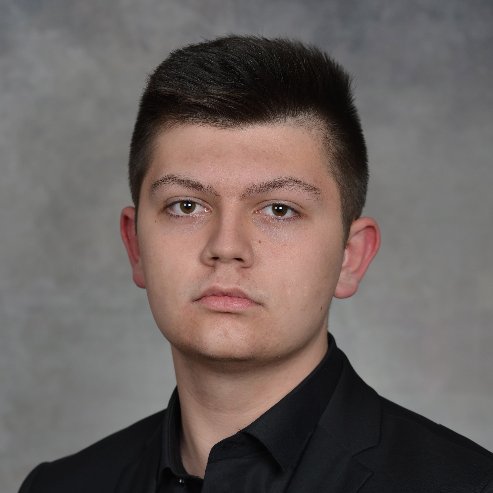

Hey, I'm Filip
I am a Software Engineering and Information Systems student at the Faculty of Computer Science and Engineering, in Skopje, Republic of Macedonia. I am a former competitor in multiple informatics related competitions in my country. I am interested in creating things, and finding solutions to interesting problems.
I was born on August 24th, 2002 in Kumanovo, where I attended primary school at "Hristijan Karposh", and finished high school at "Nace Bugjoni". Representing both of my schools I've won numerous award, which you can read more about in my résumé
If you want to reach out, please see my contact page